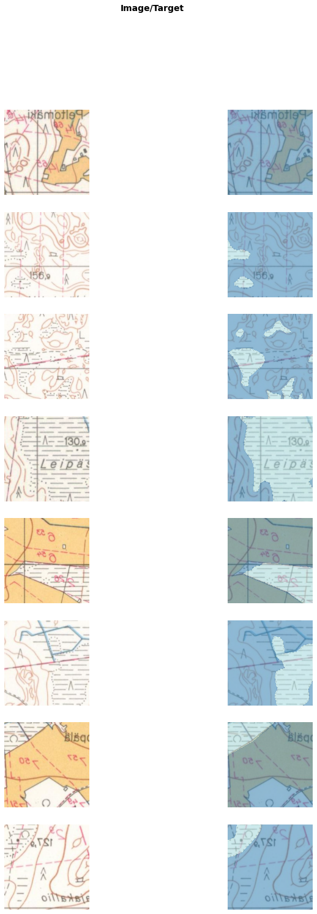

from pathlib import Pathfrom drone_detector.processing.tiling import*import osfrom fastai.vision.allimport*from drone_detector.engines.fastai.data import*
/opt/conda/lib/python3.9/site-packages/tqdm/auto.py:22: TqdmWarning: IProgress not found. Please update jupyter and ipywidgets. See https://ipywidgets.readthedocs.io/en/stable/user_install.html
from .autonotebook import tqdm as notebook_tqdm
outpath = Path('../data/historic_map/processed/raster_tiles/')fnames = [Path(outpath/f) for f in os.listdir(outpath)]dls = SegmentationDataLoaders.from_label_func('../data/historic_map/', bs=16, codes=['Marshes'], fnames=fnames, label_func=partial(label_from_different_folder, original_folder='raster_tiles', new_folder='mask_tiles'), batch_tfms = [*aug_transforms(max_rotate=0., max_warp=0.), Normalize.from_stats(*imagenet_stats) ])
/opt/conda/lib/python3.9/site-packages/torch/_tensor.py:1051: UserWarning: __floordiv__ is deprecated, and its behavior will change in a future version of pytorch. It currently rounds toward 0 (like the 'trunc' function NOT 'floor'). This results in incorrect rounding for negative values. To keep the current behavior, use torch.div(a, b, rounding_mode='trunc'), or for actual floor division, use torch.div(a, b, rounding_mode='floor').
ret = func(*args, **kwargs)
label_from_different_folder is a helper located in drone_detector.engines.fastai.data. That module also contains helpers to use with for instance multispectral images or time series of images.
dls.show_batch(max_n=16)

Train basic U-Net, using pretrained Resnet50 as the encoder. to_fp16() tells our model to use half precision training, thus using less memory. Loss function is FocalLossFlat, and for segmentation we need to specify axis=1. Metrics are Dice and JaccardCoeff, fairly standard segmentation metrics.
The model is tested with 3 different map patches from different areas and sizes. Two of the images are from 1965 and two from 1984. Image sizes vary between 600x600 and 1500x1500 pixels.